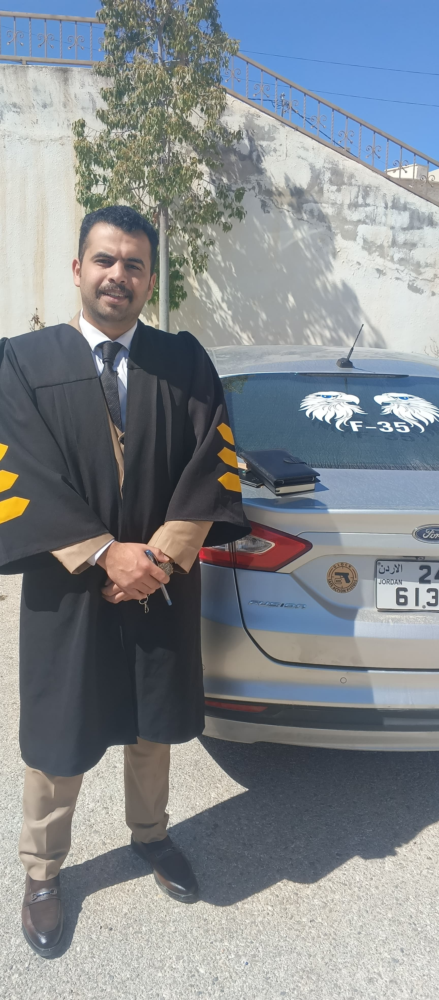

البارن
للقانون والتحكيم
مكتب المحامي ليث خلف الفالح
الرئيسية
الخدمات
المدونة
اتصل بنا
من نحن

المحامي ليث خلف الفالح
المؤهلات الأكاديمية:
درجة البكالوريوس في القانون من الجامعة الأردنية – عمان.
درجة الماجستير في القانون من جامعة آل البيت – المفرق.
الخبرات:
محامٍ نظامي متدرب لدى نقابة المحامين النظاميين الأردنيين.
محامٍ شرعي متدرب لدى دائرة قاضي القضاة.
المؤلفات:
📘 كتاب:
حق العدول ضمانًا لحماية المستهلك
– دراسة وصفية تحليلية مقارنة في ضوء التشريعين الأردني والفرنسي.
📄 بحث مقدم لنقابة المحامين بعنوان:
المسؤولية المدنية الناجمة عن أضرار الطائرات بدون طيار
.
📝 عدة أبحاث متخصصة أثناء دراسة الماجستير.